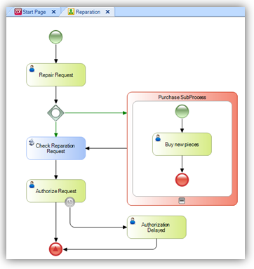
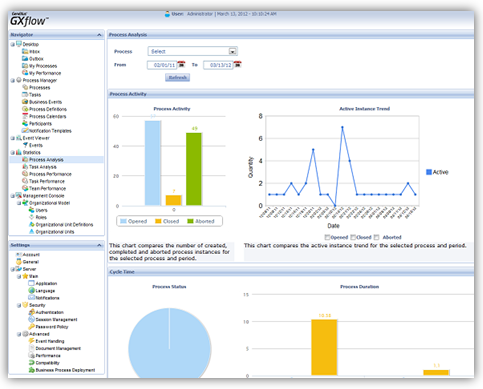
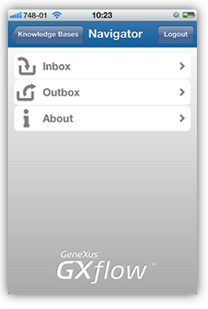

GXflow is a tool for automating business processes based on BPMN; it allows GeneXus developers to automate the flow of many tasks performed today. What is a Workflow? Nothing but a set of tasks ordered in a certain sequence that defines the process, where situations are resolved either manually or automatically. Since developers model processes, they are who benefit the most as this automation succeeds in separating the flow control logic from the application logic itself, obtaining flexibility when it comes to maintaining the application. See here a short demostration about Business Process Model use! Flow-based application development is easy in GeneXus since GXflow is fully integrated into GeneXus:    The integration occurs at several levels:
Looking for help in GeneXus BPM & GXflow?Getting StartedVideos
Online SamplesDocumentationHow ToTraining
Latest Tips
|
| Sub Categories | ||
| Category:Business Process Diagram object | Category:GXflow Client | Category:GXflow X Evolution 2 Release Notes |
| Category:Workflow Data Types | Category:Workflow Preferences |